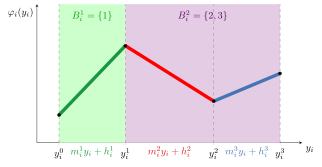

Bilevel Optimization with a Piecewise-Linear Follower¶
Henri Lefebvre1, Oleg Prokopyev2, Martin Schmidt3, Simon Stevens3
1 LIRMM, University of Montpellier, CNRS, Montpellier, France
2 Department of Business Administration, University of Zurich, Switzerland
3 Department of Mathematics, Trier University, Germany
This website presents the numerical study of our work on mixed-integer linear bilevel problems whose follower minimizes a piecewise-linear (PWL) objective.
The model¶
The leader chooses \(x\), and the follower answers with an optimal \(y\):
with \(Y(x) := \{ y \in \mathbb{R}^{n_y} : Dy \ge b - Cx,\ y^- \le y \le y^+ \}\). Every \(\varphi_i\) is continuous and piecewise linear, but need not be convex:

A non-convex PWL term \(\varphi_i\) with three pieces. The maximal sets of consecutive pieces with nondecreasing slopes form its convex blocks \(B_i^1 = \{1\}\) and \(B_i^2 = \{2, 3\}\).
Solution approaches¶
Exact reformulation over piece assignments. Each assignment \(\boldsymbol{k} \in \mathcal{K} := \prod_i [p_i]\) fixes one affine piece in every coordinate; for a fixed assignment, the follower's problem is a linear program. With computable constants (an exact penalty \(\kappa\) and big-\(M\) values \(M_z\), \(M_s\)), the bilevel problem is equivalent to a multi-follower model that selects one assignment. Each follower LP is then replaced by strong duality (aggregated, or separate for every follower) or by KKT conditions (complementarity via SOS1 or binary McCormick constraints).
Convex-block aggregation. Adjacent pieces with nondecreasing slopes form a convex block, on which \(\varphi_i\) is convex and can be modelled by one epigraph variable. Writing the reformulation over joint block choices \(\mathcal{B} = \mathcal{B}_1 \times \dots \times \mathcal{B}_{n_y}\) instead of piece assignments reduces the number of follower LPs from \(\prod_i p_i\) to \(\prod_i |\mathcal{B}_i|\).
Iterative overestimator method (IOM). Instead of materializing all joint block choices, the method replaces each \(\varphi_i\) on the right-hand side of the optimal-value constraint by a PWL overestimator that is refined iteratively. Every master problem is a relaxation; its solution is checked by solving the follower's problem at the fixed leader decision. Either the solution is optimal, or a convex block on which the overestimator is not yet exact is revealed. Since there are finitely many blocks, the method terminates. Its purpose is to certify optimality before all blocks are revealed.
Complexity. The problem is \(\Sigma_2^p\)-hard in general, even with only two pieces per PWL term; with convex PWL terms it is NP-complete; and with continuous leader variables, fixed \(n_y\), and fixed piece counts it is solvable in polynomial time.
This website¶
- Study: the benchmark instance sets, settings, and all results, with interactive charts, an instance explorer, and downloads.
The code of the solution approaches and of this study will be made available once the preprint is published.